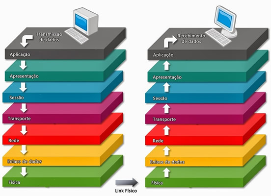

HARDWARE
MODELO OSI
O OSI é o primeiro modelo padrão de comunicação entre sistemas de computadores e redes, ele faz uso de sete camadas para garantir essa conversa. A maioria das empresas da área de computadores e telecomunicações o adotou no início dos anos 80. A partir daí, a Organização Internacional de Normalização (ISO) o transformou na principal referência em 1984.

MODELO TPC/IP
O TCP/IP é fundamental para a rede de internet. Esses dois protocolos garantem que pacotes de informações cheguem a seu destino de forma correta e segura. Dessa forma, conseguimos tratar e definir os dados entre os dispositivos antes de alcançarem seus destinos.
MODELO UDP
O Protocolo UDP é um protocolo de comunicação utilizado em toda a internet para transmissões com validade especialmente limitada, tais como reproduções de vídeo ou pesquisas no DNS. Ele acelera as comunicações ao não estabelecer formalmente uma conexão antes que os dados sejam transferidos. Isso permite que os dados sejam transferidos muito rapidamente, mas também pode fazer com que pacotes se percam em trânsito além de criar oportunidades de exploração na forma de ataques DDoS.
MODELO FTP
O FTP é um antigo, porém eficiente, protocolo de transferência de arquivos entre computadores em redes locais ou na internet, sendo bastante usado por sistemas de hospedagem de sites. No entanto, ele é considerado inseguro para os padrões de hoje e navegadores modernos estão abandonando o suporte. Saiba mais sobre o que é FTP.
MODELO DNS
O DNS — do inglês Domain Name System — é uma sigla para sistema de nomes de domínio. Como o nome sugere, é um registro que contém nomes de sites e respectivos endereços IP associados. Essa correlação favorece a transferência de dados entre computadores e permite o acesso à internet.
MODELO DHCP
DHCP, é o nome de um servidor TCP/IP que oferece serviços de configuração dinâmica em redes. Sem que o usuário perceba, ao se conectar em uma rede, esse serviço fornece automaticamente endereço IP, máscara de sub-rede, Gateway Padrão, endereço IP de um ou mais servidores DNS/WINS e sufixos de pesquisa do DNS, para que o dispositivo do usuário possa utilizar a rede e obter acesso aos recursos disponibilizados nela e acesso à internet, se houver.
MODELO HTTP/HTTPS
O HTTP é um protocolo de comunicação, ou seja, uma convenção de regras e padrões que controla e possibilita uma conexão e troca de dados entre dois sistemas computacionais.É baseado no modelo de cliente-servidor, ou seja, de um lado, um navegador requisita um determinado dado, e do outro, um computador (ou servidor) retorna a informação desejada (ou não, caso não ela seja encontrada, ocorra um erro ou não exista).
MODELO WEBSERVER
Um web server é um sistema computacional que hospeda e fornece acesso aos conteúdos e aplicações através da internet. Geralmente contratado como um serviço, esse servidor recebe e processa as solicitações feitas por navegadores através de protocolos de rede como o HTTP ou HTTPS. Um servidor que presta esse tipo de serviço pode ser um computador físico ou instância de um datacenter, que armazena e disponibiliza o conteúdo para ser acessado por meio da internet. Esse acesso geralmente é feito por computadores e dispositivos móveis através de solicitações feitas por browsers, ou seja, softwares navegadores como o Google Chrome e Microsoft Edge. Essas solicitações incluem o endereço do conteúdo desejado, como por exemplo uma página HTML, um arquivo de áudio, vídeo ou imagem. Os servidores web são responsáveis por hospedar sites, aplicativos, serviços de e-mail, armazenamento em nuvem e outros serviços online.